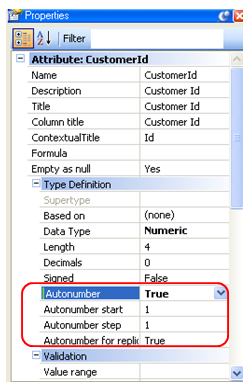

For numeric single keys (that is, made up of a single attribute), an automatic numbering can be performed using the functionality provided by the database managers for this purpose. Values
Description
To indicate this in GeneXus, you have to configure the Autonumber property of the key attribute:  If in the Autonumber property of a key numeric attribute you select the True value, this means that it will be automatically numbered (Default Value = False). The following properties will be added in the dialog: Autonumber start property Notes1. Applies to attributes and domains. |